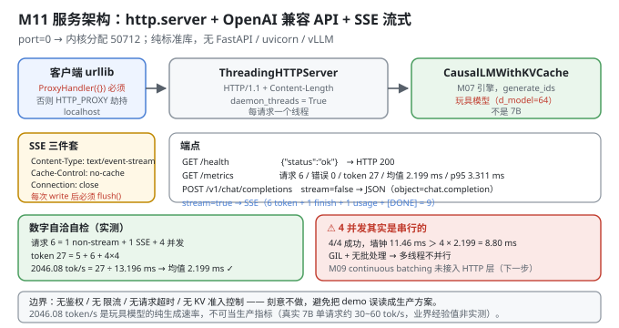
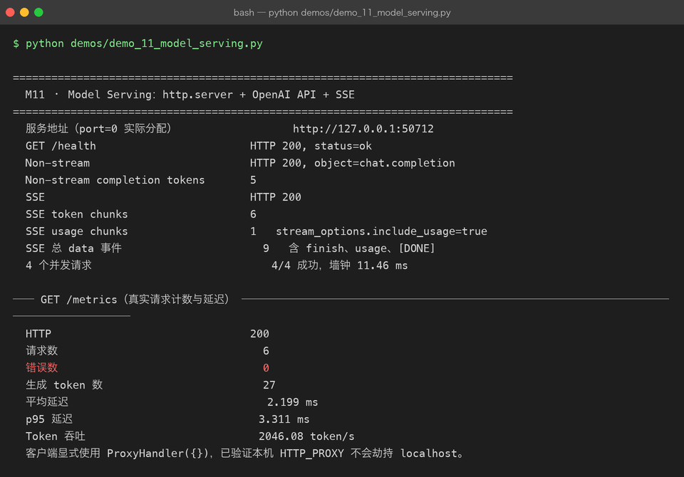

Milestone 11 — Model Serving：http.server + OpenAI API + SSE
前十层都在"离线"地评估和压榨模型。最后一层把它们服务出去：起一个 HTTP 服务，接受 OpenAI 兼容的请求，非流式返回 JSON、流式返回 SSE，并暴露 /health 与 /metrics。
这是整条主线的终点：
评估（M01-05） → 压模型（M06） → 压延迟（M07-10） → 服务化（M11）纯 Python 标准库：http.server + urllib.request + threading + json + uuid。没有 FastAPI、没有 uvicorn、没有 vLLM、没有 openai SDK —— 连客户端都是自己用 urllib 写的。
1. Why：为什么是 OpenAI 兼容 API，以及为什么手写
为什么 OpenAI 兼容：它已经是事实标准。任何支持它的客户端（openai SDK、LangChain、各类前端）都能零改动接进来。自己发明一套协议等于把自己隔离在生态之外。
为什么手写 HTTP 而不是 FastAPI：
- 暴露真实复杂度。FastAPI + uvicorn 帮你处理了并发模型、keep-alive、流式响应的 chunk 编码 —— 你就永远不知道 SSE 到底要发哪些 header。
stream_options.include_usage这类细节只有自己写才会碰到。OpenAI 的流式协议里，usage 是在最后一个 chunk 之后、[DONE]之前单独发的，且choices为空数组。- 零依赖：整个 P09 只有 numpy，这一章连 HTTP 都不借外力。
代价也要写清楚：这个服务没有鉴权、没有限流、没有请求超时、没有真正的批处理调度（见 4.6）。它是一个"把原理跑通"的服务，不是生产服务。
2. Design：四个端点，一个对象
class ServingMetrics:
requests / errors / generated_tokens / latencies_ms # 全部在 threading.Lock 下更新
snapshot() -> 请求数 / 错误数 / token 数 / 均值 / p50 / p95 / token 吞吐
make_handler(engine, tokenizer, metrics) -> BaseHTTPRequestHandler
GET /health {"status": "ok"}
GET /metrics metrics.snapshot()
POST /v1/chat/completions OpenAI 兼容；stream=false → JSON；stream=true → SSE四个关键设计点：
ThreadingHTTPServer+daemon_threads（src/ie/serve.py:187）：每个请求一个线程，进程退出时不卡在等待上。protocol_version = "HTTP/1.1"+ 显式Content-Length：HTTP/1.1 默认 keep-alive，但必须给出准确的Content-Length，否则客户端不知道响应体何时结束，会一直等。_json里用len(body)计算。- SSE 的三件套 header：
Content-Type: text/event-stream、Cache-Control: no-cache、Connection: close，并在每次write后flush()—— 不 flush 的话数据会留在缓冲区，客户端看不到"流式"。 metrics.record在异常路径也要调用（src/ie/serve.py:130）：except分支里同样record(..., error=True)，否则错误请求不计入错误率 —— 一个永远显示errors: 0的监控等于没有监控。
消息 → prompt 的转换（src/ie/serve.py:45）：把 messages 渲染成 role: content 逐行拼接，末尾加 assistant:。这是最朴素的 chat template —— 真实模型有各自的 template，用错了质量会明显下降。

3. Real-run evidence（来自 demos/out/demo_11_model_serving_terminal.txt）
真实环境：Python 3.13.12 | numpy 2.5.3。port=0 让内核分配空闲端口。
服务地址（port=0 实际分配） http://127.0.0.1:50712
GET /health HTTP 200, status=ok
Non-stream HTTP 200, object=chat.completion
Non-stream completion tokens 5
SSE HTTP 200
SSE token chunks 6
SSE usage chunks 1 stream_options.include_usage=true
SSE 总 data 事件 9 含 finish、usage、[DONE]
4 个并发请求 4/4 成功，墙钟 11.46 ms── GET /metrics（真实请求计数与延迟） ─────────────────────────────────
HTTP 200
请求数 6
错误数 0
生成 token 数 27
平均延迟 2.199 ms
p95 延迟 3.311 ms
Token 吞吐 2046.08 token/s
客户端显式使用 ProxyHandler({})，已验证本机 HTTP_PROXY 不会劫持 localhost。数字全部对得上（这是最有力的自检）：
| 项 | 还原 |
|---|---|
| 请求数 6 | 1（non-stream）+ 1（SSE）+ 4（并发）= 6；/health 与 /metrics 走 do_GET，不计入 |
| 生成 token 27 | 5（non-stream, max_tokens=5）+ 6（SSE, max_tokens=6）+ 4×4=16（并发, max_tokens=4）= 27 |
| SSE data 事件 9 | 6 个 token chunk + 1 个 finish chunk + 1 个 usage chunk + 1 个 [DONE] = 9 |
| Token 吞吐 2046.08 | 27 / (Σ延迟 / 1000)，反解 Σ延迟 = 13.196 ms，均值 13.196 / 6 = 2.199 ms ✓ |
五个读数：
port=0实际分配到 50712。这是让内核挑空闲端口的标准做法 —— demo 不用硬编码端口，也就不会和机器上已经跑着的服务打架。- SSE 的
stream_options.include_usage=true生效：6 个 token chunk 之后单独发了 1 个 usage chunk（choices: []），最后发data: [DONE]。 - 4 个并发请求 4/4 成功，零错误（
错误数 0）。 - p95 3.311 ms vs 均值 2.199 ms —— 长尾约为均值的 1.5 倍，符合"请求长度不同 + 线程调度"的预期。
- 2046.08 token/s —— 见 4.5，这个数不能当生产指标。

4. 踩坑 / 反直觉发现
4.1 ⭐ macOS 的 HTTP_PROXY 会拦 localhost —— 必须显式禁用代理
这是本章唯一一个会让 demo 直接跑不起来的真实踩坑。
urllib.request 默认会读环境变量 http_proxy / HTTP_PROXY / no_proxy。在 macOS 上（尤其装了代理软件、brew 配过代理、或公司网络环境下），HTTP_PROXY 通常是全局设置的 —— 于是 urlopen("http://127.0.0.1:50712/health") 会被送进代理，代理当然找不到你本机刚起的临时端口，直接失败。
解法是显式构造一个不带任何代理的 opener：
def no_proxy_opener():
"""显式禁用 HTTP_PROXY，确保 localhost 请求不绕到代理。"""
return build_opener(ProxyHandler({}))ProxyHandler({}) 传的是空字典 —— 意思是"所有协议都没有代理"，这会覆盖掉环境变量。demo 里所有请求（POST 和 GET）都走它。
更常见的做法是设
no_proxy=localhost,127.0.0.1，但那依赖环境变量被正确读取；ProxyHandler({})是更强的保证 —— 它不依赖环境，直接在 opener 层面把代理关掉。可迁移的经验：测试本地服务时，任何"连不上"的报错先怀疑代理。 这条在 macOS + 公司代理的环境下命中率极高。
4.2 4 并发墙钟 11.46 ms > 4 × 单请求均值 —— 它们其实是串行的
ThreadingHTTPServer 给了 4 个线程，但没有真正的并行：
单请求平均延迟 2.199 ms
4 并发墙钟 11.46 ms
若完全并行： ≈ 2.2 ms
若完全串行： 4 × 2.199 = 8.80 ms
实测： 11.46 ms ← 比"完全串行"还慢超出串行预期的 2.66 ms 是线程创建与 GIL 切换的开销。
原因有两层：
- 模型推理本身没有批处理：每个请求独立调用
engine.generate_ids()，一次一个序列 —— M09 的 continuous batching 没有接进来。 - GIL：numpy 只在大矩阵运算时释放 GIL，而本项目的矩阵是
64×64量级，释放的时间远小于争用的时间，所以多线程实际是串行执行。
诚实标注："4/4 成功"证明的是并发安全性（metrics 的锁、 handler 的无状态），不是并发性能。 真正的吞吐要靠 M09 的调度 + M08 的分页 + 真实的批 kernel，本项目没有把它们接到 HTTP 层 —— 这是明确的下一步，不是遗漏。
4.3 SSE 不 flush() 就不是流式
def send(data):
encoded = f"data: {json.dumps(data, ensure_ascii=False)}\n\n".encode("utf-8")
self.wfile.write(encoded)
self.wfile.flush() # ← 必须有self.wfile 是带缓冲的。不 flush() 的话，6 个 chunk 会攒在缓冲区里，直到 close_connection 时才一起发出去 —— 客户端看到的是"一次性收到全部"，完全失去了流式的意义（首 token 延迟 = 全量延迟）。
三件套 header 里 Connection: close 也是必需的：SSE 是长连接响应，不能用 keep-alive 复用，而 Content-Length 又不该给（长度未知）。所以最后要显式 self.close_connection = True。
4.4 metrics.record 必须覆盖异常路径
except Exception as exc:
metrics.record(generated, (time.perf_counter() - started) * 1000.0, error=True)如果只在成功分支 record，那么所有失败请求都不进指标 —— 监控面板会永远显示 errors: 0、p95 只统计成功的请求（幸存者偏差）。
本 demo 的 错误数 0 是可信的，正因为异常路径也会计数：如果真有请求失败，它会被记成 1 而不是被隐藏。
顺带一个细节：generated 在异常时是多少就记多少（生成了一半也记），这样"生成 token 数"这个指标不会因为失败而虚低。
4.5 ⚠ 后端挂的是玩具模型，2046 token/s 不能当生产指标
必须诚实标注：
- 服务端挂的是 P09 的玩具模型（
d_model=64、n_layers=2、vocab 1024），不是 7B。 2046.08 token/s=27 token / 13.196 ms。它衡量的是"这个玩具模型在这台机器上、单请求串行的生成速度"。- 它的分母里没有排队时间（demo 里请求是串行发出的），所以它不是"服务吞吐"，而是"纯生成速率"。
- 真实 7B 在 A100 上单请求大约 30~60 token/s（业界经验值，非本机实测）—— 比这里慢几十倍，因为模型大 1000 万倍。
这个数字在本项目里的唯一用途是：证明 /metrics 端点的计算逻辑正确（27 token、13.196 ms、2046.08 三者自洽）。
4.6 边界：这个服务缺什么
如实列出，避免把 demo 误读成生产方案：
| 缺失 | 后果 | 真实实现的做法 |
|---|---|---|
| 批处理调度 | 请求串行执行，吞吐上不去 | M09 的 continuous batching + M08 的分页（本项目未接入 HTTP 层） |
| 鉴权 | 任何人都能调用 | API Key / Bearer token |
| 限流 | 一个客户端能打满服务 | 令牌桶 + 并发上限 + 队列 |
| 请求超时 | 慢请求永久占用线程 | per-request deadline |
| KV 显存上限 | 长请求会 OOM | M08 的块池 + M10 的账本做准入控制 |
| 真正的并行 | GIL 限制 | 多进程 / 异步 + CUDA |
本项目刻意不做这些，是因为它们每一个都值得独立一章，而本章的目标是"把 HTTP ↔ 模型 ↔ 指标这条链路跑通"。
4.7 log_message 被覆盖成空函数 —— demo 可复现性的小细节
def log_message(self, _format, *args) -> None:
returnBaseHTTPRequestHandler 默认会把每个请求打到 stderr。demo 要把输出落进 demos/out/*.txt 做对比，stderr 的日志会污染输出。
这类"为了让输出可复现而静音"的处理，在整个 P09 反复出现（M02 的全序排序、M03 的 seed、M07 的中位数）—— 可复现性是一系列小决定的总和，不是某一个大决定。
5. Conclusion
- 服务 = 4 个端点 + 1 个
ServingMetrics：/health、/metrics、POST /v1/chat/completions（stream=false→ JSON /stream=true→ SSE）。 - 实测（
port=0→ 50712）：/health200、non-stream200（object=chat.completion，5 token）、SSE 200（6 token chunk + 1 usage chunk，总 data 事件 9）、4 并发 4/4 成功（墙钟 11.46 ms）。 /metrics数字自洽：请求 6 = 1+1+4；生成 token 27 = 5+6+16；均值 2.199 ms、p95 3.311 ms、2046.08 token/s（27 / 13.196 ms反解一致）；错误 0。- ⭐ macOS 的
HTTP_PROXY会拦 localhost —— 必须用build_opener(ProxyHandler({}))显式禁用代理，否则连不上自己的服务。这是真实踩坑。 - SSE 必须
flush()+Connection: close+Cache-Control: no-cache，否则退化成一次性返回。 metrics.record要覆盖异常路径（error=True），否则错误率恒为 0、延迟统计有幸存者偏差。- ⚠ 4 并发实测是串行的（11.46 ms > 4×2.199 ms）—— GIL + 无批处理；M09 的 continuous batching 未接入 HTTP 层，这是明确的下一步。
- ⚠ 后端是玩具模型不是 7B：2046.08 token/s 只用于证明
/metrics计算自洽，不能当生产指标。 - 边界：无鉴权 / 无 限流 / 无超时 / 无 KV 准入控制 —— 刻意不做，避免把 demo 误读成生产方案。
- 手写实现的意义：因为 HTTP handler 是自己写的，我才能精确控制 SSE 的每个字节（
data: {json}\n\n）并验证include_usage的 chunk 顺序 —— 用 FastAPI 的StreamingResponse你只会得到一个"能跑"的黑盒。
6. Code map
| 文件 | 职责 |
|---|---|
src/ie/serve.py | ServingMetrics（threading.Lock 下的请求/错误/token/延迟记录，snapshot() 算均值/p50/p95/token 吞吐）/ _prompt_from_messages（role: content 拼接 + assistant:）/ make_handler（do_GET / do_POST / _stream）/ create_server / start_server（后台线程 serve_forever）/ stop_server / no_proxy_opener（ProxyHandler({})，本章最关键的踩坑修复） |
src/ie/serve.py:59 | protocol_version = "HTTP/1.1" —— 配合显式 Content-Length 支持 keep-alive |
src/ie/serve.py:130 | 异常路径同样 metrics.record(..., error=True) |
src/ie/serve.py:201 | no_proxy_opener()：build_opener(ProxyHandler({})) |
src/ie/engine.py | CausalLMWithKVCache.generate_ids：服务端的生成后端（M07 的引擎，带 KV Cache） |
demos/demo_11_model_serving.py | 5 节：启动 / health / non-stream / SSE / 4 并发 + metrics |
demos/out/demo_11_model_serving_terminal.txt | 本章所有数字的来源 |
assets/model-serving.svg | 本章服务架构与 SSE 流式图 |
7. Version line
v0.10 → v1.0，M11 模型服务化落地，Project 09 主线完成。实测（port=0 → 50712）：/health HTTP 200 status=ok；non-stream HTTP 200 object=chat.completion（5 token）；SSE HTTP 200、6 个 token chunk + 1 个 usage chunk、总 data 事件 9（含 finish、usage、[DONE]）；4 并发 4/4 成功，墙钟 11.46 ms；/metrics 请求 6 / 错误 0 / 生成 token 27 / 平均延迟 2.199 ms / p95 3.311 ms / 2046.08 token/s（27 ÷ 13.196 ms 反解自洽）。并诚实记录「⭐ macOS 的 HTTP_PROXY 会拦 localhost，必须 ProxyHandler({}) 显式禁用代理」「⚠ 4 并发实际串行（11.46 ms > 4×2.199 ms），GIL + 未接入 M09 批处理，是明确下一步」「⚠ 后端是玩具模型不是 7B，2046.08 token/s 仅证明 /metrics 计算自洽，不可当生产指标」「无鉴权 / 限流 / 超时 / KV 准入控制」。纯 Python 标准库（http.server + urllib + threading），无 FastAPI / uvicorn / vLLM / openai SDK。配图 1 张手写 SVG + 1 张真实终端截图。